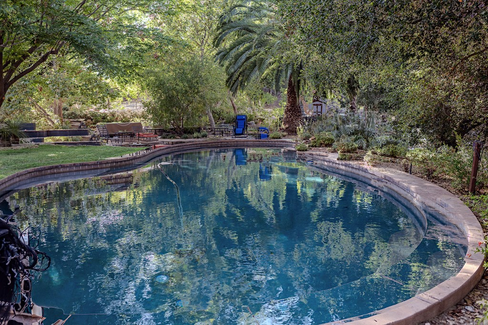
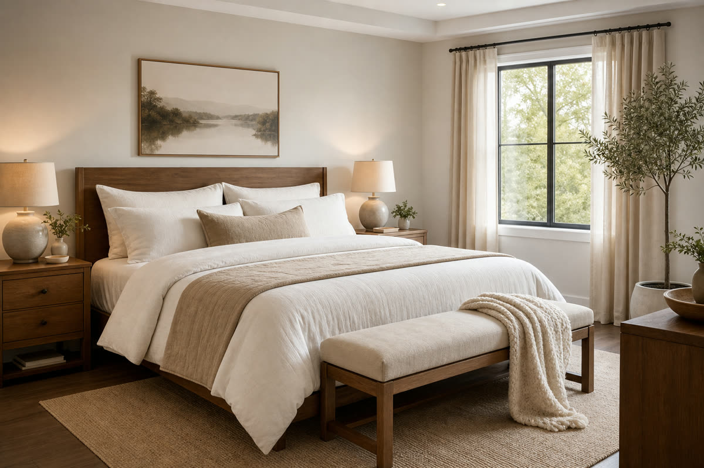

NUTRITION & GUT HEALTH
Proper nutrition plays a vital role in emotional and physical well-being. Residents enjoy chef-prepared meals and education designed to support healing, energy, and long-term wellness.
Healing the mind. Restoring the body. Renewing the spirit.
At Serenity Ranch, recovery goes beyond symptom management. We treat the whole person through a comprehensive, integrative approach designed specifically for first responders. Our goal is to help you build the foundation for lifelong wellness.

Proper nutrition plays a vital role in emotional and physical well-being. Residents enjoy chef-prepared meals and education designed to support healing, energy, and long-term wellness.
Exercise, strength training, and functional fitness are integrated into recovery to restore physical resilience, regulate stress, and support mental clarity.
Reconnecting the mind and body is essential for trauma recovery. Somatic approaches help release stored stress and restore nervous-system regulation.

Healthy sleep is foundational to healing. Our environment and clinical support help residents establish healthy routines and improve restorative rest.
Therapeutic massage and restorative services support emotional and physical healing, helping the body release tension carried from years of service.
At Serenity Ranch, recovery extends beyond symptom management to help residents build sustainable habits that support lifelong wellness.